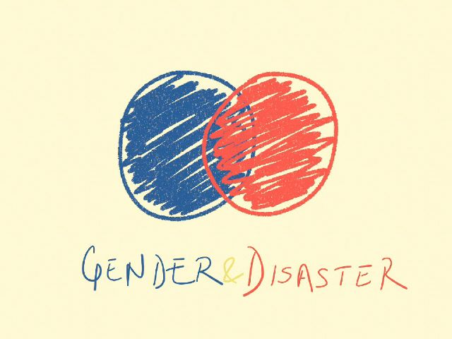

All information is from A practical guide to Gender-sensitive Approaches for Disaster Management [PDF].
The supplement is created by the International Federation of Red Cross and Red Crescent (IFRC) Socities. It contains approaches to mitigate disaster via different strategies during disaster response, recovery and future mitigation. The report also presents the learnings from six case studies in Pakistan, Myanmar, Bangladesh, China, Indonesia and Solomon Islands.
* Page null(86) indicates that the information is outside of the IFRC report
* Image from @annaverve